01 · Key Color / SSoT Palette
키 컬러
팔레트의 단일 진실 원천은 game_key_color.jpg. 호박(Amber)과 청록(Teal)의 듀얼리티가
작품 전체의 따뜻한 축과 차가운 축을 가른다. 모든 신규 자산은 이 6톤 위에서만 채색하며,
각 톤은 WCAG 명도 대비비를 동반해 가독성 게이트를 통과한다.
19.23:1
Arctic Powder
#F1F6F4
UI 텍스트 · 하이라이트
13.51:1
Forsythia
#FFC801
PRIMARY · 호박 액센트
9.52:1
Nocturnal Exp.
#114C5A
청록 베이스 · 정체성
16.59:1
Mystic Mint
#D9E8E2
잔향 하이라이트
9.85:1
Deep Saffron
#FF9932
포지 발열 · 경고
14.63:1
Oceanic Noir
#172B36
패널 · 심연 베이스
Anchor / 시선 닻
Auburn Red #B14B2C
에르다 머리카락. 전 화면 5% 고정 — 1순위 초점.
Warm / 따뜻한 축
Amber 호박
UI · 포지 · 안식 · 응답의 온기.
Cold / 차가운 축
Cyan Residue #46C9C2
에코 잔향 · 눈 발광 · 비물질 위상.
Mass / 무관심
Industrial Grey #3C4750
메가 스트럭처 · 빌더 · 시공의 무관심.

// SOURCE OF TRUTH
원본 키 컬러 시트. 좌측 페이지는 6톤 + 대비비,
하단 두 컷은 라이트/다크 무드 적용 예시.
// RULE
신규 자산은 6톤 외 임의 색 도입 금지.
Auburn · Cyan Residue 두 파생 톤만 캐논 추가.
채도 높은 외곽 발광은 아이템(레어리티) 전용.
02 · Saturation / 채도 방향성
채도 전략
핵심 규칙 — 환경은 저채도, 액센트는 고채도. 메가 스트럭처는 무채에 가까운 회색으로
눌러 두고, 채도 에너지는 오직 시선을 끌어야 할 요소(머리카락 닻 · 포지 발열 · 에코 잔향 · 레어리티 글로우)에만 집중한다.
채도를 절제할수록 한 점의 고채도가 폭발한다.
// 환경 — 저채도 억제
Industrial GreyS 4% → 14%
메가 스트럭처 전역. 의미 현저성(건축 형태)으로 시선을 끌고 색은 죽인다.
// 액센트 — 고채도 폭발
Amber 호박S 100%
포지 · UI · 안식. 환경 회색과 최대 채도 격차.
Cyan Residue 잔향S 64%
아이템계 심층일수록 채도 ↑ — 비물질화 신호.
Auburn 닻S 60% · 면적 5%
면적은 작게, 채도는 높게 — 전 화면 1순위 초점.
03 · Contrast / 대비 방향성
대비 & 명도
채색에 앞서 흑백 명도 골격을 먼저 확정한다(Bacher / Framed Ink). 전역은
로키(low-key) — 어둠이 화면을 지배하고, 포지 발열·에코 발광 같은 국소 지점만 고대비로 튄다.
아래는 제작 표준인 3톤 명도 램프와, 키 팔레트의 실측 대비비다.
// 3-Tone Value Ramp (제작 1단계)
SHADOW
DARK
MID
LIGHT
ACCENT
3톤 흑백 썸네일 → 실루엣 검수 → 채색 → 강조색 닻. 역순 금지.
// 측정 대비비 (vs Oceanic Noir)
Arctic Powder19.23
Mystic Mint16.59
Forsythia13.51
Deep Saffron9.85
Nocturnal Exp.9.52
전 톤 AA(4.5:1) 상회 — 픽셀 가독성 보장.
// 실루엣 가독성 게이트 — 검은 형상만으로 분리되는가
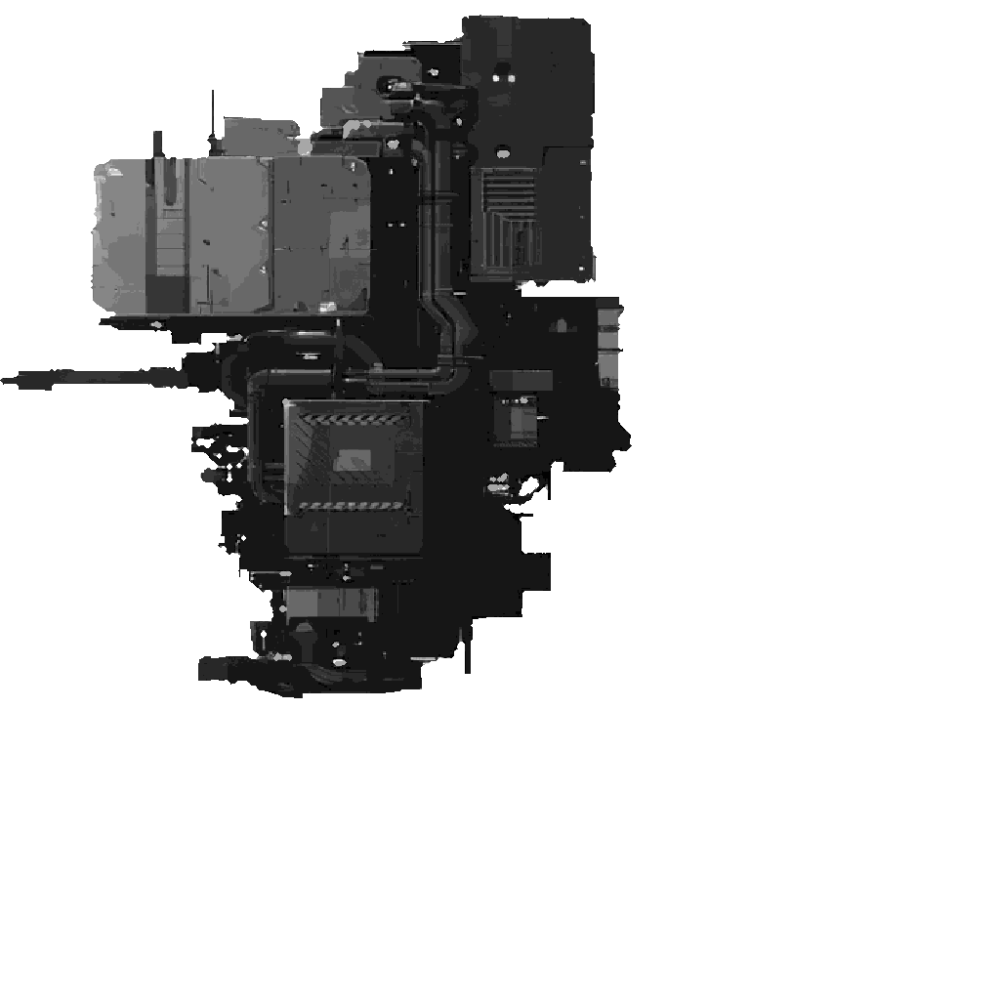
Builder
메가 스트럭처 · 1:40
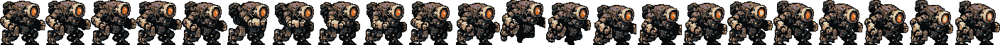
Mecha
전투 적 · 65px
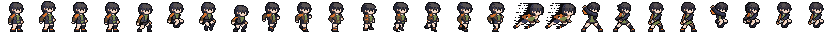
Erda
주인공 · 32px
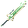
Sword
무기 · 채널 분리
04 · 3-Zone Differentiation
3축 시각 차별화
플레이어가 한 프레임만 보고도 World · Builder · Item Stratum 중 무엇인지 1초 안에
분류할 수 있어야 한다. 축이 바뀔 때 색만이 아니라 공간·선·형태·움직임·사운드를 동시에 뒤집는다.
01
World
메가 스트럭처 — 외부 탐험
- 공간
- 딥 스페이스 · 3층 패럴랙스
- 색
- Industrial Grey + Deep Black
- 색온
- 차가움 (중성 회색)
- 선
- 수직 격자 · 직선 (질서)
- 리듬
- 느린 거대 펄스 (시공 박자)
- 사운드
- 시공 굉음 · 저역 지배
외경 · 고독 (恨)
02
Builder
빌더 내부 — 포지 / 안식
- 공간
- 리미티드 · 낮은 천장 · z축 압축
- 색
- 어두운 청-회색 + Amber 점광
- 색온
- 따뜻함 (호박 침투)
- 선
- 곡선 · 유기 (내장 · 둥지)
- 리듬
- 감쇠 굉음 + 단조 망치
- 사운드
- 먹먹한 굉음 + 죽 끓음
안도 · 온기 (情)
03
Item Stratum
에코 내부 위상 — 다이브
- 공간
- 앰비규어스 · 무중력 부유
- 색
- Cyan Residue 발광 + Amber 조각
- 색온
- 비물질 한색 (청록)
- 선
- 불규칙 · 해체 · 부드러운 가장자리
- 리듬
- 정적 + 느린 표류 (보스 시 가속)
- 사운드
- 굉음 부재 + 잔향 + 한 음성
응답 · 비물질
불변 닻 #1
붉 5% (에르다 머리)
세 축 어디서나 화면의 시선 1순위. 전환 중 방향 상실을 막는 연속성.
불변 닻 #2
호박 실 (Amber thread)
World 점광 → Builder 안식 → Stratum 조각으로 형태만 바뀌며 끊기지 않는다.
전환 설계
경계에서 최대 강도
포지 격발(중앙 전환)이 가장 자주·강하게 겪는 경계 — 컬러 스크립트의 정점.
05 · Tone Mix / 톤 비중
화면별 톤 비중
각 구역의 5톤 면적 분포. 붉은색은 모든 화면에 5% 이상 — 에르다의 머리카락이 시각 닻으로 항상 박혀 있다.
이 정적 분포가 시간축 강도 곡선(평행 구조)의 기준선이 된다.
06 · Character Canon
캐릭터 캐논
핵심 결정 — 에르다와 러스트본이 같은 결(붉은-갈색 머리 · 청록 눈)이다. 이 시각 친연성이
진엔딩의 통찰(에르다도 누군가의 에코였다)을 캐릭터 디자인 자체로 운반한다.
에르다 Erda
주인공 · Sculpted Avatar
붉은-갈색 머리 · 청록 눈 · 주근깨 · 어두운 청-회색 천 + 구리/녹슨 디테일. 차분, 거의 무표정 — 의도된 침묵. 빌더 대비 1:40 스케일.
러스트본 Rustborn
첫 에코 · 검 안의 한 음성
에르다와 동일 결, 부식이 더 진행된 버전. 청록 눈에 미세한 호박색 발광 — 에코 내부에서만. 그녀를 보는 시선에 슬픔.
默
묵정 Mukjeong
인덱서 지도자 · 입체 빌런
가장 어두운 의례 천 + 모자 (silhouette 구별). 한쪽 다리에 시공 단위 응결재가 자람 — 걸음새 비대칭. 지팡이로 다리를 두드리는 박자.
露
노다 Roda
단조소 노인 · 정 멘토
굽은 등, 한쪽 귀 먼 노인. 청-회색 천 + 호박 앞치마(포지 빛 반사). 식기·죽 그릇이 정 device. 사라짐 비트 — 자세 그대로 페이드.
伊
이리 Iri
거울 동료 · Foil
에르다와 같은 공동 출신 — 머리·눈 결 유사(거울 구조). 의례 검은 천 한 자락. 무릎 꿇는 자세 모션. 등재의 길을 택한 또 하나의 응답.
律
율 Yul
마을 아이 · 興 운반자
작은 실루엣. 밝은 톤 한 점(어린 생기) — 잔존자 무채색 군에서 유일한 채도. 발목 응결재 흉터(옷에 가림, 본인만 만짐).
≈시각 친연성
두 인물의 닮음은 우연이 아니다 — 한 고리의 한 항으로 이어지는 자기 자신의 시각화. 첫 플레이는 자각하지 못하고, 두 번째 플레이에서 회수된다.
07 · World / Backgrounds
배경 & 메가 스트럭처
배경은 BLAME! 식 거대 수직 구조를 3층 패럴랙스로 운반한다. 빌더는 인간형 메카가 아니라
움직이는 산업 건축물 — 한 마리가 곧 작은 도시 규모. 얼굴도 시선도 의도도 없는 무관심 그 자체.
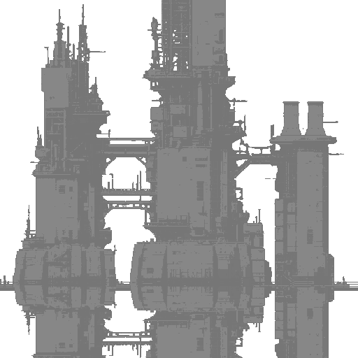
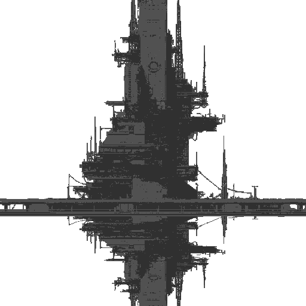
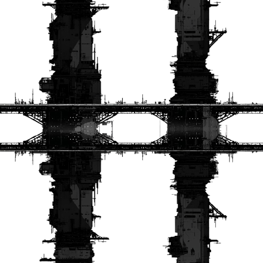
FAR — 멀리 시공 영역 윤곽
MID — 한 빌더의 작업 첨탑
NEAR — 검은 실루엣 + 연결 다리
// Builder — 무지능 시공자
부피 우세의 산업 건축물. 파이프·패널·벤트·벙커의 무수한 디테일이 통일된 어두운 회색으로 눌린다.
적색 시공 광원은 적이 아니라 작업 신호로 점광 산점.
격파 불가 — 한 박자 멈춤만 가능한 환경적 위협이다.
형태 심리
수직 부피
= 압도 · 무관심한 거대 권력.
광원
적색 점광
= 작업 시그니파이어 (적대 아님).
08 · Weapon / 검의 진행
무기 & 레어리티
시작 무기는 러스트본의 검 — 그의 자기 잔존이자 진엔딩의 시드. 레어리티 5등급은
Diablo 식 색 체계를 따르되, 채도 높은 외곽 발광은 아이템 전용 채널로 환경 색과 분리한다.
청록 위상 안에서도 녹색 Ancient 검이 또렷이 떠오른다.
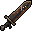
Normal
러스트본 · ×1.0
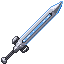
Magic
×1.3 · 2지층
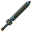
Rare
×1.7 · 3지층
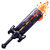
Legendary
×2.2 · 4지층
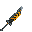
Broken
잔존자 흔적
// 녹쇠 7단계 — 검 자체의 각성 (UI 없이 칼날 발광만으로 진행 파악)
09 · UI / HUD
UI — 호박색 브루탈리스트
현 HUD의 결을 그대로 확장 — 호박색 윤곽 + 검은 패널 + 다이아몬드 기하학 픽셀.
모던 트랜지션 부재, 픽셀 비트맵 폰트. 이 호박색이 작품 전체 따뜻한 축의 기준값이다.
// 점진 노출 — UI 부재 = 자기 부재
UI는 에르다의 자기 회복과 평행하게 등장한다. 시작 3분은 입력 프롬프트 한 줄만,
이름·HP·에코 인덱스가 서사 비트에 맞춰 차례로 켜진다. Ludonarrative 일관성의 핵심.
0:00
UI 거의 부재. 입력 프롬프트 한 줄만.
10:00
러스트본 후 — 이름 "에르다" 첫 노출 (5초).
18:00
에코 인덱스 "1/300" — 검 각인과 동기.
// 식별 채널 분리 — 한 채널을 한 요소 군이 점유
환경 (3축)
색온 + 형태 + 모션
World/Builder/Stratum을 동시 다중 컴포넌트로.
아이템 (레어리티)
외곽 채도 글로우
소형 오브젝트 한정 — 환경 색과 충돌 회피.
적 카테고리
실루엣 + 스케일
색이 아닌 형태·크기로 구분 (채널 포화 방지).